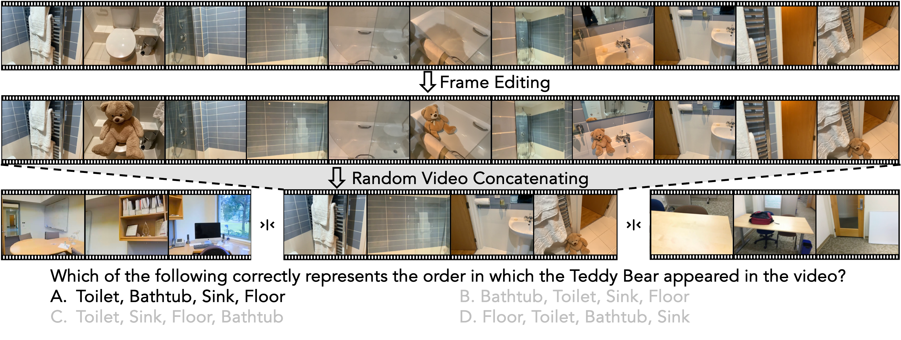
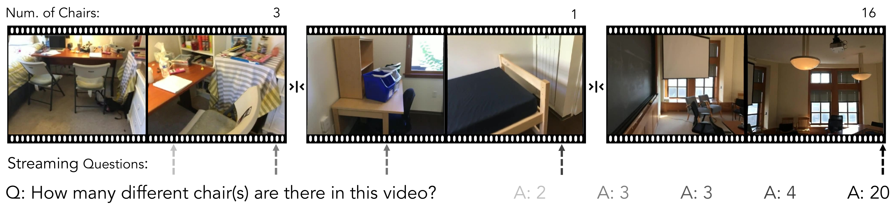
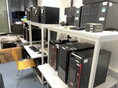
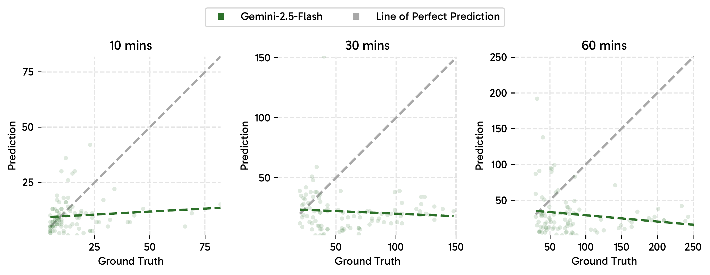
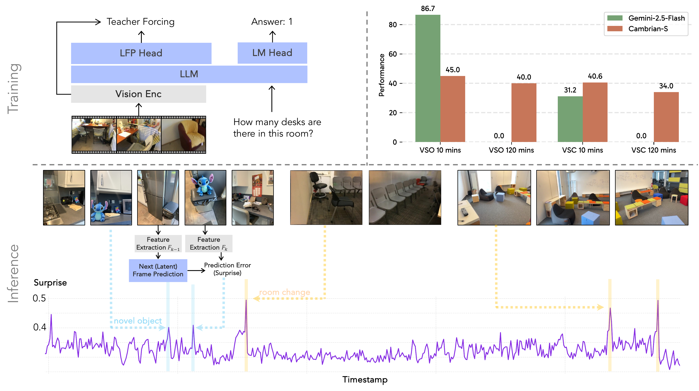
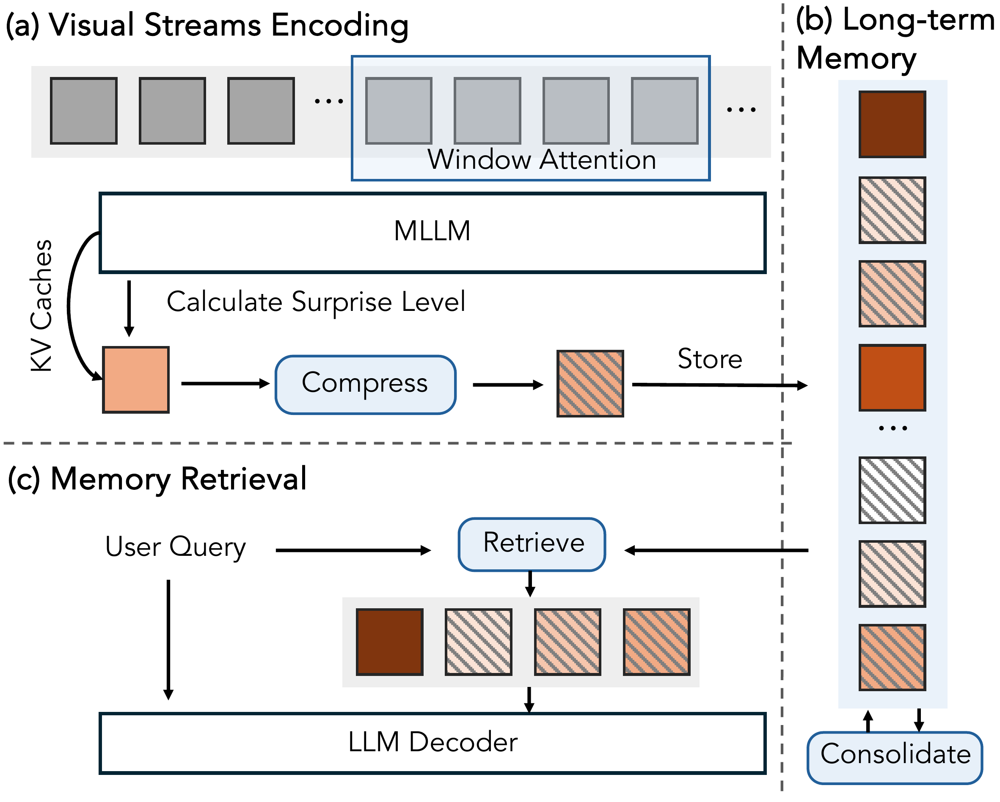
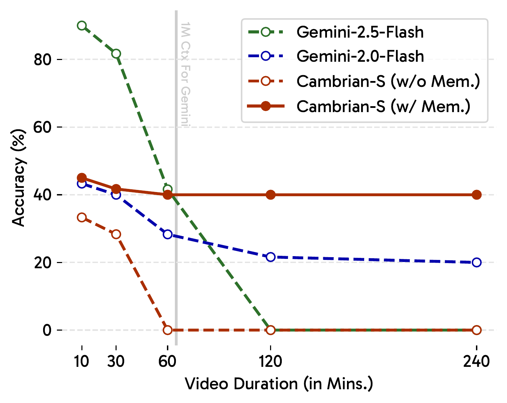
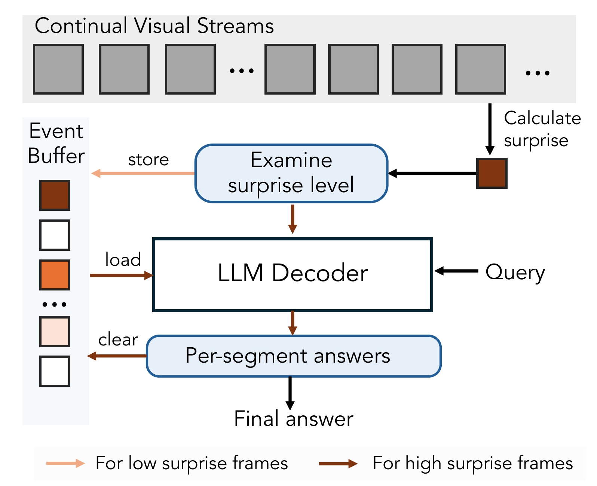
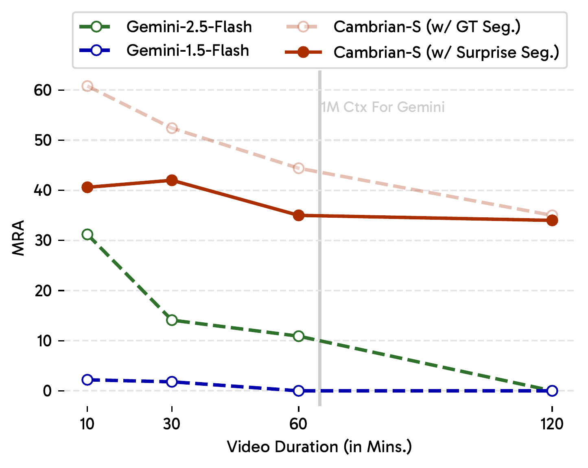

Position: We argue that advancing toward true multimodal intelligence requires a shift from language-centric perception toward spatial supersensing: the capacity not only to see, but also to construct, update and predict with an implicit 3D world model from continual sensory experience.
Benchmark: We re-examine existing benchmarks through the lens of our supersensing hierarchy and design a two-part benchmark to better probe spatial supersensing.
Dataset: We investigate whether spatial supersensing is simply a data problem, and curate a large-scale spatially focused dataset VSI-590K to push the limit under existing paradigm.
Model: We develop Cambrian-S, a family of spatially-grounded models with leading spatial sensing performance and competitive general capabilities.
Predictive Sensing: We prototype predictive sensing, using latent frame prediction to build MLLM's internal world model, and measuring surprise to handle unbounded visual streams.
A video is not just a sequence of frames in isolation. It is a continual, high-bandwidth projection of a hidden, evolving 3D world onto pixels. Although multimodal large language models (MLLMs) have advanced rapidly by pairing strong image encoders with language models, most video extensions remain fundamentally constrained. They still treat video as sparse frames, underrepresent spatial structure and dynamics, and lean heavily on textual recall, thus overlooking what makes the video modality uniquely powerful.
We argue that advancing toward true multimodal intelligence requires a shift from language-centric perception toward spatial supersensing: the capacity not only to see, but also to construct, update, and predict an implicit model of the 3-D world from continual sensory experience. We define spatial supersensing as a hierarchy of capabilities:
Figure: From pixels to predictive mind. We look beyond linguistic-only understanding to envision multimodal intelligence that sees, remembers, and reasons as part of a continuous, lived world.
(Linguistic-only understanding): no sensory capabilities; reasoning confined to text and symbols. Current MLLMs have progressed beyond this stage, yet still retain traces of its bias.
Semantic perception: parsing pixels into objects, attributes, and relations. This corresponds to the strong multimodal show and tell capabilities present in MLLMs.
Streaming event cognition: processing live, unbounded streams while proactively interpreting and responding to ongoing events. This aligns with efforts to make MLLMs real-time assistants.
Implicit 3D spatial cognition: understanding video as projections of a 3D world. Agents must know what is present, where, how things relate, and how configurations change over time. Today's video models remain limited here.
Predictive world modeling: the brain makes unconscious inference by predicting latent world states based on prior expectations. When these predictions are violated, surprise guides attention, memory, and learning. However, current multimodal systems lack an internal model that anticipates future states and uses surprise to organize perception for memory and decision making.
Deconstructing Existing Video Benchmarks
Recent advances in MLLM have led to a surge in video QA benchmarks. However, a critical question remains: to what extent do existing video benchmarks truly examine visual sensing capabilities rather than simply testing language priors? We establish several experimental conditions for feeding video input to a Cambrian-1 model:
Diagnostic Setup. We establish five experimental conditions to isolate the contributions of different information sources. We provide the model with either a Single Frame (the middle frame), Multiple Frames (32 uniformly sampled frames), or textual Frame Captions generated from those 32 frames. We compare these against two baselines: a Blind Test, where the model only receives the question, and Chance Acc, which represents random guessing. By analyzing performance differences between these conditions—such as diff(Multiple, Single) to assess temporal cues or diff(Multiple, Captions) to control for textual solvability—we can create a fine-grained profile of each benchmark's characteristics.
Figure: Comprehensive analysis comparing visual, caption-only, and blind settings across existing video benchmarks.
Existing benchmarks overwhelmingly focus on linguistic understanding and semantic perception while neglecting the more advanced spatial and temporal reasoning required for supersensing.
Analysis of Results. Results presented in the above figure (a-c) demonstrate that Cambrian-1, an image-based MLLM without any video post-training, can attain reasonable performance across many benchmarks, in some instances surpassing chance-level accuracy by 10-30% (see g,h). This suggests that much of the knowledge these benchmarks target is accessible via standard single-image instruction-tuning pipelines.
Also, employing textual captions in place of visual inputs also yields notable performance improvements, surpassing chance accuracy by more than 20% on benchmarks such as Egoschema, VideoMME, LongVideoBench, VideoMMMU, Perception Test, and MVBench (i, j). Such performance implies that these benchmarks primarily probe abilities inferable from textual summaries of video content.
Nevertheless, on existing datasets focusing on spatial-temporal reasoning (like VSI-Bench, HourVideo and Tomato), Cambrian-1 still struggles with only textual or single-frame inputs.
Remark. We hope to emphasize the inherent challenges in benchmarking and the impracticality of creating a single, all-encompassing benchmark to evaluate every capability. For example, reliance on language priors should not be viewed merely as a drawback, as access to rich world knowledge and its effective retrieval is undoubtedly beneficial in many scenarios. We argue that video benchmarks should not be treated as measuring a single, uniform notion of "video understanding." Instead, their design and evaluation should be grounded in the specific capabilities they aim to assess. The preceding analyses are therefore intended to guide the development of tasks that more effectively drive progress towards spatial supersensing, which will be the central focus of the rest of the paper.
VSI-SUPER: Towards Benchmarking Spatial Supersensing in Multimodal LLMs
VSR: Long-Horizon Spatial Observation and Recall
The VSR benchmark requires MLLMs to observe long-horizon spatiotemporal videos, and sequentially recall the locations of an unusual object.
As shown in the figure below, to construct this benchmark, human annotators use an image editing model (like Gemini) to insert surprising or out-of-place objects (like a Teddy Bear, Hello Kitty) into four distinct frames of a space-scanning video. This edited video is then concatenated with other similar space-scan videos to create an arbitrarily long and continuous visual stream. This task parallels the needle-in-a-haystack (NIAH) test commonly used in the language domain to stress test the long-context capabilities of LLMs. Similar NIAH setups have also been proposed for long-video evaluation. However, unlike benchmarks that insert unrelated text segments or frames, VSR preserves the realism of the "needle" through in-frame editing. It further extends the challenge by requiring sequential recall, effectively a multi-hop reasoning task, and remains arbitrarily scalable in video length.

Figure: VSR benchmark design for long-horizon spatial recall. To thoroughly evaluate model performance across different time scales, the benchmark is provided in five durations: 10, 30, 60, 120, and 240 minutes.
VSC: Continual Counting under Changing Viewpoints and Scenes
VSC test the capacity of MLLMs to continuously accumulate information in long-form spatial videos. To build VSC, we concatenate multiple room-tour video clips from VSI-Bench and task models with counting the total number of target objects across multiple rooms (see the figure below). This setting is challenging because the model must handle viewpoint shifts, repeat sightings, and scene transitions, all while maintaining a consistent cumulative count. For humans, counting is an intuitive and generalizable process. Once the concept of "one" is understood, extending it to larger quantities is natural. In contrast, as we later demonstrate, current MLLMs lack true spatial cognition and depend excessively on learned statistical patterns.

Figure: VSC benchmark for continual counting across changing viewpoints and scenes.
VSI-SUPER Demo

VSC: Continual Counting
This video is playing at 1.25x speed. You can adjust the speed using the controls above.
Question: How many different chair(s) are there in the video?
Answer:
Ground Truth: 4+4+9 = 17
Gemini 2.5 Pro: 11
Gemini 2.5 Flash: 9
Click to view Ground Truth and MLLM's answer!
VSR: Spatial Recall
This video is playing at 2x speed. You can adjust the speed using the controls above.
Question: Which of the following correctly represents the order in which the white Ragdoll cat appeared in the video?
Options:
A. Table, Windowsill, Chair, Shelf
B. Chair, Table, Windowsill, Shelf
C. Windowsill, Shelf, Table, Chair
D. Chair, Shelf, Table, Windowsill
Ground Truth: C
Click to view Ground Truth!
How VSI-SUPER Challenges Current MLLM Paradigm?
Model
VideoMME
VideoMMMU
VSI-Bench
VSR
VSC
60 mins
120 mins
60 mins
120 mins
Gemini-2.5-Flash
81.5
79.2
45.7
41.5
Out of Ctx.
10.9
Out of Ctx.
Table: s a state-of-the-art video understanding model with long-context capabilities, Gemini demonstrates strong performance on general video benchmarks but shows clear limitations towards spatial supersensing.
State-of-the-art models struggle on VSI-SUPER. As shown in the table above, the model reaches its context limit when handling two-hour videos, despite a context length of 1,048,576 tokens. This highlights the open-ended nature of video understanding, where continuous streams effectively require an "infinite-in, infinite-out" context and can grow arbitrarily long, suggesting that simply scaling up tokens, context length, or model size may not suffice. Though synthetic, our benchmark reflects a real challenge in spatial supersensing: humans effortlessly integrate and retain information from ongoing sensory experiences that unfold over hours or years, yet current models lack comparable mechanisms for sustained perception and memory. Gemini-2.5-Flash demonstrates strong performance on semantic-perception and linguistic-understanding-focused video benchmarks such as VideoMME, achieving around 80% accuracy. However, even for 60-minute videos in \vsisuper that fall well within its context window, performance on VSR and VSC remains limited: only 41.5 and 10.9, respectively. In addition, as shown in the figure below, the model's predicted object counts fail to scale with video length or the true number of objects, instead saturating at a small constant value, suggesting a lack of generalization in counting ability and a reliance on training distribution priors.

Figure: Visualization shows Gemini-2.5-Flash's failure to scale counting ability with the number of objects.
VSI-SUPER tasks challenge the belief that scaling alone guarantees progress.
By allowing arbitrarily long video inputs that emulate the dynamics of streaming cognition, VSI-SUPER is intentionally constructed to exceed any fixed context window. This design suggests that frame-by-frame tokenization and processing are unlikely to be computationally viable as a long-term solution. Humans address such problems efficiently and adaptively by selectively attending to and retaining only a small fraction of sensory input, often unconsciously. This predictive and selective mechanism, core to human cognition, remains absent in current MLLMs but is fundamental to a predictive world model.
VSI-SUPER tasks demand generalization to new temporal and spatial scales at test time.
For example, VSC requires counting in arbitrarily long videos, similar to how humans, who understand the concept of counting, can extend it to any number. The key is not maintaining an extremely long context window, humans do not retain every visual detail from extended visual experiences, but rather learning the process of counting itself. Predictive sensing facilitates this by segmenting continuous visual streams into coherent events, using moments of "surprise" to impose temporal structure. This segmentation acts as a divide-and-conquer mechanism that allows the model to decide when to start, continue, or reset behaviors in dynamically changing scenes.
Together, these challenges, which span computational efficiency, generalization, and cognitive mechanisms such as unconscious inference and predictive sensing, call for a paradigm shift. Rather than relying solely on scaling data, parameters, or context length, future models should learn internal world models capable of perceiving and predicting within an endlessly unfolding visual world across space and time.
Pushing the Limits of Spatial Sensing in the Current Paradigm
Frontier MLLM, Gemini-2.5-Flash, performs suboptimally on both spatial supersensing and spatial reasoning. This raises a question:
is suboptimal spatial supersensing intrinsically bounded by a model's foundational spatial sensing abilities, and can it be addressed by data scaling?
VSI-590K: Is Limited Spatial Sensing Simply a Data Problem?
It is well recognized that data quality and diversity play a critical role in the training of MLLMs. We hypothesize that the performance gap on VSI-Bench comes mainly from the lack of high-quality, spatially grounded data in current instruction-tuning datasets. To fill this gap, we build VSI-590K, a large-scale instruction-tuning dataset designed to improve visual-spatial understanding.
Dataset
# Videos
# Images
# QA Pairs
Annotated Real Videos
S3DIS
199
-
5,187
Aria Digital Twin
183
-
60,207
ScanNet
1,201
-
92,145
ScanNet++ V2
856
-
138,701
ARKitScenes
2,899
-
57,816
Simulated Data
ProcTHOR
625
-
20,092
Hypersim
-
5,113
176,774
Unannotated Real Videos
YouTube Room Tour
-
20,100
20,100
Open X-Embodiment
-
14,801
14,801
AgiBot-World
-
4,844
4,844
Total
5,963
44,858
590,667
Table: Statistics for VSI-590K. The curated data draws from 10 sources (with different modalities and types of annotations) to improve diversity.
Cambrian-S: A Spatially-Grounded MLLM
Improved spatial cognition.
As shown in the table below, our method yields a new state-of-the-art in spatial reasoning. Cambrian-S-7B achieves a score of 67.5% on VSI-Bench, significantly outperforming all open-source models and even surpassing the proprietary Gemini-2.5-Pro by over 16 absolute points. Furthermore, our training recipe is highly effective even at smaller scales, with our 0.5B model achieving comparable results with Gemini-1.5 Pro on VSI-Bench. This focus on spatial skills does not compromise general capabilities, as Cambrian-S maintains competitive performance on standard video benchmarks such as Perception Test and EgoSchema.
Model
Base LM
Video
Image
VSI-Bench
Tomato
HourVideo
VideoMME
EgoSchema
VideoMMMU
LongVBench
MVBench
Percept. Test
RWQA
3DSR
CV-Bench
Proprietary Models
Claude-3.5-sonnet
UNK.
-
27.8
-
62.9
-
65.8
-
-
-
51.9
48.2
-
GPT-4o
UNK.
34.0
37.7
37.2
71.9
-
61.2
66.7
-
-
-
44.2
-
Gemini-1.5-Pro
UNK.
48.8
36.1
37.3
75.0
72.2
53.9
64.0
-
-
67.5
-
-
Gemini-2.5 Pro
UNK.
51.5
-
-
-
-
83.6
67.4
-
-
-
-
-
Open-Source Models
LLaVA-Video-7B
Qwen2-7B
35.6
22.5
28.6
63.3
57.3
36.1
58.2
58.6
67.9
66.4
-
75.7
LLaVA-One-Vision-7B
Qwen2-7B
32.4
25.5
28.3
58.2
60.1
33.9
56.4
56.7
57.1
66.3
-
74.3
Qwen-VL-2.5-7B
Qwen2.5-7B
33.5
-
-
65.1
65.0
47.4
56.0
69.6
-
-
48.4
-
InternVL2.5-8B
InternLM2.5-7B
34.6
-
-
64.2
50.6
-
60.0
72.0
-
68.4
50.9
-
InternVL3.5-8B
Qwen3-8B
56.3
-
-
66.0
61.2
49.0
62.1
72.1
-
67.5
-
-
Cambrian-S-7B
Qwen2.5-7B
67.5
27.0
36.5
63.4
76.8
38.6
59.4
64.5
69.9
64.8
54.8
76.9
VILA1.5-3B
Sheared-LLaMA-2.7B
-
-
-
42.2
-
-
42.9
-
49.1
-
-
-
Qwen2.5-VL-3B
Qwen2.5-3B
26.8
-
-
61.5
-
-
54.2
-
66.9
-
-
-
Cambrian-S-3B
Qwen2.5-3B
57.3
25.4
36.8
60.2
73.5
25.2
52.3
60.2
65.9
60.1
50.9
75.2
SmolVLM2-2.2B
SmolLM2-1.7B
27.0
-
-
-
34.1
-
-
48.7
51.1
-
-
-
InternVL2.5-2B
InternLM2.5-1.8B
25.8
-
-
51.9
47.4
-
52.0
68.8
-
60.1
-
-
InternVL3.5-2B
Qwen3-1.7B
51.5
-
-
58.4
50.8
-
57.4
65.9
-
62.0
-
-
Cambrian-S-1.5B
Qwen2.5-1.5B
54.8
22.5
31.4
55.6
68.8
24.9
50.0
58.1
63.2
54.5
51.9
69.6
SmolVLM2-0.5B
SmolLM2-360M
26.1
-
-
-
20.3
-
-
43.7
44.8
-
-
-
LLaVA-One-Vision-0.5B
Qwen2-0.5B
28.5
-
-
44.0
26.8
-
45.8
45.5
49.2
55.6
-
55.5
InternVL2.5-1B
Qwen2.5-0.5B
22.5
-
-
50.3
39.8
-
47.9
64.3
-
58.1
-
-
InternVL3.5-1B
Qwen3-0.6B
49.9
-
-
51.0
41.5
33.0
53.0
61.0
-
57.6
-
-
Cambrian-S-0.5B
Qwen2.5-0.5B
50.6
23.4
27.9
44.0
62.4
15.7
44.0
51.8
56.0
51.1
48.5
59.8
Table: Comparison of Cambrian-S with other leading MLLMs. Cambrian-S leads against proprietary and open-sourced models on various image and video visual-spatial benchmarks.
Cambrian-S achieves state-of-the-art spatial sensing performance with robust generalization to unseen spatial question types, while staying competitive in general video understanding.
Results on VSI-SUPER: Limitations in Continual Spatial Sensing.
Despite the success on tasks involving spatial reasoning in short and pre-segmented clips on VSI-Bench, Cambrian-S is ill-suited for the demands of continual sensing. This limitation is evident in two ways. First, performance collapses on long videos.
As shown in the table below, on the VSI-SUPER benchmark, scores drop to zero for videos exceeding 30 minutes, as they fall outside the model's context window. Even within this window, performance on VSR steadily degrades from 38.3% to 6.0% as video length increases from 10 to 60 minutes, and the model fails completely on videos longer than 60 minutes.
Second, the model has difficulty generalizing to new test scenarios. Although trained on multi-room house tour videos, it fails to handle unseen examples with just a few additional rooms. This issue isn't simply about context length: performance drops even on short 10-minute videos that fit comfortably within model's context window. These results highlight that a purely data-driven approach within the current MLLM framework, no matter how much data or engineering effort is invested, faces fundamental limits. Addressing these limitations calls for a paradigm shift toward AI systems that can actively model and anticipate the world while organizing their experiences more efficiently, which we explore next.
Eval Setup
VSR
VSC
10 min
30 min
60 min
120 min
240 min
10 mins
30 min
60 min
120 min
Uni. Sampling, 128F
26.7
21.7
23.3
30.0
28.2
16.0
0.0
0.0
0.0
FPS Sampling, 1FPS
38.3
35.0
6.0
0.0
0.0
0.6
0.0
0.0
0.0
Table: Despite strong performance on VSI-Bench, accuracy
on VSR drops sharply from 38.3% (10 min) to 0.0% (>60 min), and VSC completely fails.
Scaling data and models is essential, but alone it cannot unlock true spatial supersensing.
Predictive Sensing as a New Paradigm
Performance of both Gemini-2.5-Flash and Cambrian-S drops sharply on VSI-SUPER, revealing a fundamental paradigm gap: scaling data and context alone is insufficient for supersensing.
We propose predictive sensing as a path forward, where models learn to anticipate their sensory input and construct internal world models to handle unbounded visual streams.
This design is inspired by theories of human cognition. Unlike current video multimodal models that tokenize and process entire data streams, human perception (and memory) is highly selective, retaining only a fraction of sensory input.
The brain continuously updates internal models to predict incoming stimuli, compressing or discarding predictable inputs that contribute no novel information.
In contrast, unexpected sensory information that violates predictions generates "surprise" and drives increased attention and memory encoding.
We prototype this concept via a self-supervised next-latent-frame prediction approach. The resulting prediction error serves as a control signal for two key capabilities: memory management to selectively retain important information, and event segmentation to partition unbounded streams into meaningful chunks. We demonstrate through two case studies on VSI-SUPER that this approach substantially outperforms strong long-context and streaming video model baselines.
Predictive Sensing via Latent Frame Prediction
We implement our predictive sensing paradigm through a lightweight, self-supervised module called the Latent Frame Prediction (LFP) head, which is trained jointly with the primary instruction-tuning objective. During inference, we leverage the trained LFP head to evaluate the "surprise" for every incoming visual sensory input (a.k.a, Violation-of-Expectation (VoE) paradigm). Specifically, during inference, video frames are fed into Cambrian-S at a constant sampling rate. Unless otherwise noted, the videos in the following experiments are sampled at 1 FPS before being input into the model.
As the model receives incoming video frames, it continuously predicts the latent features of the next frame. We then measure the cosine distance between the model's prediction and the actual ground truth feature of that incoming frame. This distance serves as a quantitative measure of surprise: a larger value indicating a greater deviation from the model's learned expectations. This surprise score acts as a powerful, self-supervised guidance signal for the downstream tasks explored next.

Figure: Latent frame prediction (LFP) architecture and training.
Case Study I: Surprise-driven Memory Management System for VSI-SUPER Recall.
Most current MLLMs treat all video frames equally, storing every frame without selective compression or forgetting, which limits efficiency and scalability. In this case study, we explore augmenting MLLMs with a surprise-driven memory management framework to support continual spatial-sensing question answering over long-duration videos.
We show that through the surprise-guided compression, Cambrian-S maintains consistent accuracy and stable GPU memory footprints, independent of video length.
Our memory management system dynamically compresses and consolidates visual streams based on the estimate of "surprise". As shown in the figure below (a), we encode incoming frames using sliding window attention with fixed window size. The latent frame prediction module then measures a "surprise level" and assigns it to each frame's KV caches. Frames with a surprise level below a predefined threshold undergo 2x compression before being pushed into long-term memory. To maintain a stable GPU memory footprint, this long-term memory is constrained to a fixed size by a consolidation function that, once again, operates based on surprise: dropping or merging frames according to their surprise scores (see the figure below (b)). Finally, upon receiving a user query, the system retrieves the top-K most relevant frames from the long-term memory by calculating the cosine similarity between the query and the stored frame features (see the figure below (c)).

Figure: Surprise-driven memory management for VSR.
We compare Cambrian-S with and without the surprise-based memory system, against two advanced proprietary models Gemini-1.5-Flash and Gemini-2.5-Flash, on the VSR benchmark. As shown in the figure below, Cambrian-S (w/ Mem.) outperforms Gemini-1.5-Flash and Cambrian-S (w/o Mem.) at all video lengths, demonstrating consistent and remarkable spatial sensing across video lengths. Although Gemini-2.5-Flash yields promising results for videos within an hour, it fails to process longer inputs. On par with Cambrian-S (w/ Mem.) remarkable performance, it maintains a stable GPU memory usage across different video lengths. This demonstrates that the unconscious surprise level inference effectively compresses the redundant data without losing critical information.

Figure: VSR performance comparison across different video durations showing the effectiveness of surprise-driven memory management.
Predictive sensing provides a more principled approach to modeling the spatiotemporal dynamics of video data than static similarity measures based on per-frame features.
Case Study II: Surprise-driven continual video segment for VSI-SUPER Count.
While VSR focuses on evaluating the long-term observation and recall abilities of MLLMs, a more challenging test of supersensing would involve testing a model's capacity to interpret its sensory input, navigate across varied environments, and perform cumulative, multihop reasoning. For example, the model might need to complete a task in one environment, move to another, and ultimately integrate information from all experiences to reach a final decision.
In the VSI-SUPER Count benchmark, we segment videos using the prediction error to detect ''surprise'', using them as natural breakpoints to partition the video into manageable segments. This approach mirrors human problem-solving. For instance, a person counting objects in a large area would naturally handle one section at a time before aggregating the results. As shown in the figure below, the model continuously buffers low-surprise frames in short-term memory. Upon detecting a high-surprise frame, the buffer is summarized to create a segment answer and then cleared. This process repeats until the end of the video. Finally, the final answer is aggregated by all segment answers.

Figure: Memory counting design illustration.
As shown in the figure below, Gemini-1.5-Flash achieves nearly zero performance in VSC, demonstrating the difficulty of this task. Although Gemini-2.5-Flash yields much better results on 10-minute videos, its performance declines rapidly on longer videos. In contrast, he surprise-driven event segmentation approach used by Cambrian-S (w/ Surprise Seg) achieves higher and more stable performance across all video lengths. When the video is segmented using ground-truth scene transitions (ie, Cambrian-S w/ GT Seg), performance improves further, representing an approximate upper bound.

Figure: Count results analysis showing scaling behavior across different models.
Conclusion
We highlight the importance of and propose a hierarchy for spatial supersensing capabilities in videos, arguing that achieving superintelligence requires AI systems to move beyond text-based knowledge and semantic perception, the current focus of most MLLMs, to also develop spatial cognition and predictive world models. To measure progress, we introduce VSI-SUPER and find that current MLLMs struggle with it. To test whether current progress is limited by data, we curate VSI-590K and train our spatially grounded MLLM, Cambrian-S, on it. Although Cambrian-S performs well on standard benchmarks, its results on VSI-SUPER reveal the limitations of the current MLLM paradigm. We prototype predictive sensing, using latent frame prediction and surprise estimation to handle unbounded visual streams. It improves Cambrian-S performance on VSI-SUPER and marks an early step toward spatial supersensing.
Limitations.
Our goal is to present a conceptual framework that encourages the community to reconsider the importance of developing spatial supersensing. As a long-term research direction, our current benchmark, dataset, and model design remain limited in quality, scale, and generalizability, and the prototype serves only as a proof of concept. Future work should explore more diverse and embodied scenarios and build stronger connections with recent advances in vision, language, and world modeling.
BibTeX
@article{yang2025cambrian,
title={Cambrian-S: Towards Spatial Supersensing in Video},
author={Yang, Shusheng and Yang, Jihan and Huang, Pinzhi and Brown, Ellis and Yang, Zihao and Yu, Yue and Tong, Shengbang and Zheng, Zihan and Xu, Yifan and Wang, Muhan and Lu, Daohan and Fergus, Rob and LeCun, Yann and Fei-Fei, Li and Xie, Saining},
journal={arXiv preprint arXiv:2511.04670},
year={2025}
}